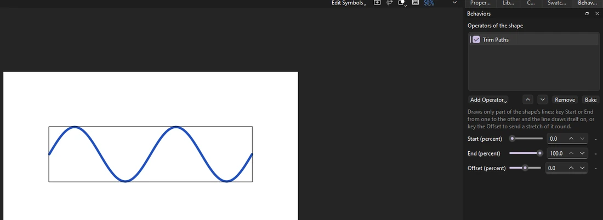
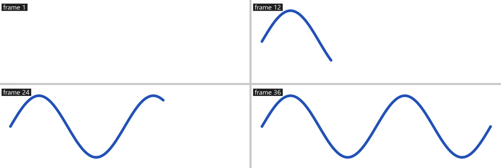

Tutorials
Draw-on lines
Make a line draw itself on with Trim Paths, keying its End, then make it boil with Wiggle Path.
This page is also a lesson inside Phoenix: choose and start Draw-on lines, and Phoenix points at each control as you go. It takes about 7 minutes.
To follow along here instead, download the starting document, draw-on.fla, and open it with .

Shape operators change a drawn shape each frame. Trim Paths draws only part of a line: animate it and the line draws itself on, like a signature or a route on a map.
1. Select the line
Press V and click the blue line. It is a drawing object, so one click picks it whole.
2. Open the Behaviors panel
Choose Window > Behaviors if it is not showing. It lists what is on the selection and the settings of each.
3. Add Trim Paths
With a shape selected the button reads Add Operator. Click it and choose Trim Paths.
4. Key the End at 0
The playhead is on frame 1. Set End (percent) to 0: the line disappears. Then click the diamond beside it to key it on this frame.
A keyed setting changes over time: Phoenix goes smoothly from each key to the next.

5. Go to frame 36
Click frame 36 on the Line layer.
6. End at 100
Set End (percent) to 100. Since the setting is keyed, this makes a second key here.
7. Play it
Press Enter, or click the play button in the timeline header. The line draws itself on from left to right.
8. Make it boil
Click Add Operator and choose Wiggle Path, then tick Change on whole frames only. The line shakes a little each frame, like hand-drawn line work.
What you did
You keyed Trim Paths to draw a line on and made it boil. Key Start after it to draw it off again, or use Offset to send a short dash along the line.
Bake turns operators into drawing objects, a frame each, when you need plain frames.
For everything this tutorial touches on, see Behaviors.